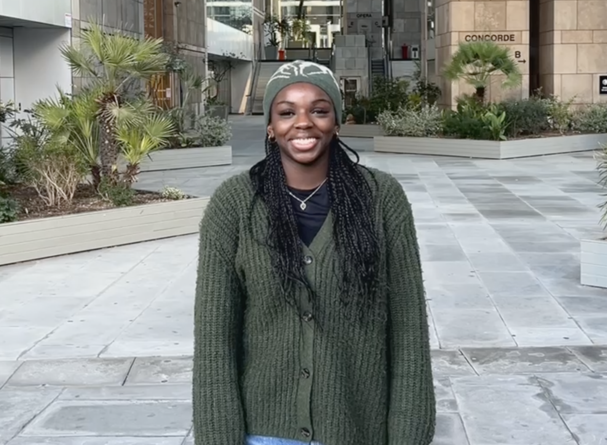

PORTFOLIO
À propos
Actuellement en deuxième année de BUT MMI (Métiers du Multimédia et de l’Internet), je suis à la recherche d’un stage à partir du 7 avril 2025 pour une durée minimale de 8 - 10 semaines, avec la possibilité de poursuivre en alternance par la suite. Passionnée par l’audiovisuel, l’évènementiel et le graphisme, je suis particulièrement intéressée par les postes d’assistante cheffe de projet ou de community manager.
Compétences
Création Numérique
- Indesign (Intermédiaire)
- Photoshop (Intermédiaire)
- After Effects (Débutante)
Développement Web
- HTML (Avancée)
- CSS (Intermédiaire)
- JavaScript (Débutante)
Autres
- Figma (Intermédiaire)
- Notion (Débutante)
- WordPress (Intermédiaire)
Contente de vous annoncer qu'en avril 2025, je vais passer la certification Opquast !
Qu’est-ce que c’est Opquast ?
Il s’agit de 240 bonnes pratiques en lien avec l’analyse des sites web. Ce référentiel contient donc les bonnes pratiques du web, qui doivent pouvoir être vérifiables et communes à tous.
L’objectif de ce référentiel est de pouvoir évaluer nos compétences, les améliorer si besoin et certifier de votre expertise en matière de projet web.
C’est un moyen d’acquérir, d'approfondir des connaissances et de m’assurer que mes projets web respectent les standards actuels.
Projets
Site Databstention
Site d'analyse des taux d'abstention au premier tour des élections législatives en France.
Voir le projet
Contactez-moi
Envie de collaborer ou simplement d'échanger ? N'hésitez pas à me contacter grâce aux informations ci-dessous.
 GitHub
GitHub
 LinkedIn
LinkedIn
 Télécharger mon CV
Télécharger mon CV